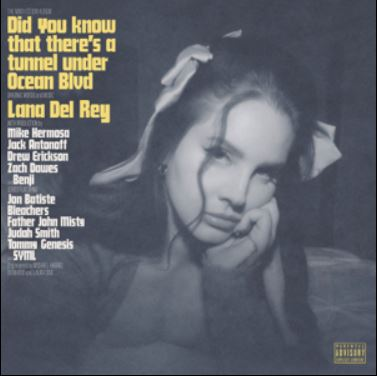

Did You Know That There's a Tunnel Under Ocean Blvd is the ninth studio album by American singer-songwriter Lana Del Rey, released on March 24, 2023, by Interscope and Polydor Records. The album features production by Del Rey, Mike Hermosa, Jack Antonoff, Drew Erickson, Zach Dawes, and Benji and includes collaborations with Jon Batiste, Bleachers, Father John Misty, Tommy Genesis, SYML and Riopy.
Lana Del Ray is the debut studio album by American singer-songwriter Lana Del Rey.[1][2] The album was released by 5 Points Records on January 4, 2010 via the United States Amazon MP3 and iTunes Stores. The record was eventually pulled from retailers soon afterwards because, according to Del Rey, the label was unable to fund it.
Born to Die is the second studio album and major-label debut by American singer-songwriter Lana Del Rey. It was released on January 27, 2012, through Interscope Records and Polydor Records. The album was reissued on November 9, 2012, as an expanded version, subtitled The Paradise Edition.
Ultraviolence is the third studio album by American singer-songwriter Lana Del Rey, released on June 13, 2014, by Polydor and Interscope Records. Originally dismissing the possibility of releasing another record after her major-label debut Born to Die (2012), Del Rey began planning its follow-up in 2013.